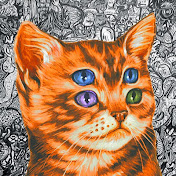

Talking Tech and AI with Google CEO Sundar Pichai!
3.4M views · 6 months ago
Talking Tech and AI with Google CEO Sundar Pichai!
3.4M views · 6 months ago


Art Craft Cloned Adobe Creative Cloud and Made it Open Source
9,1 тыс views · 3 ч назад